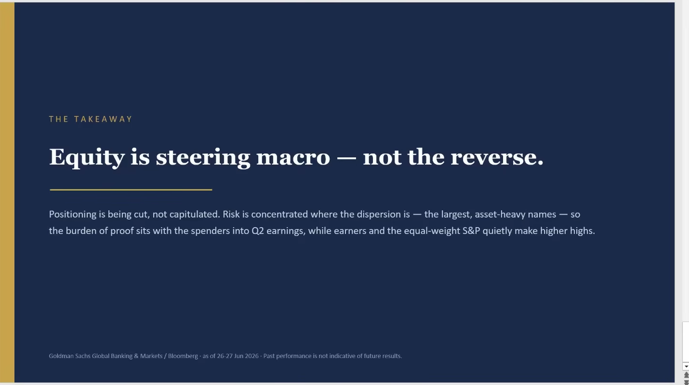
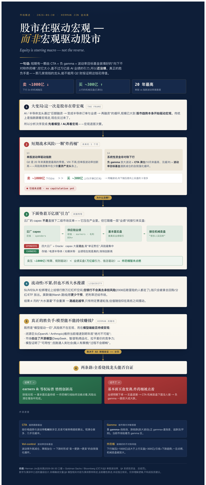
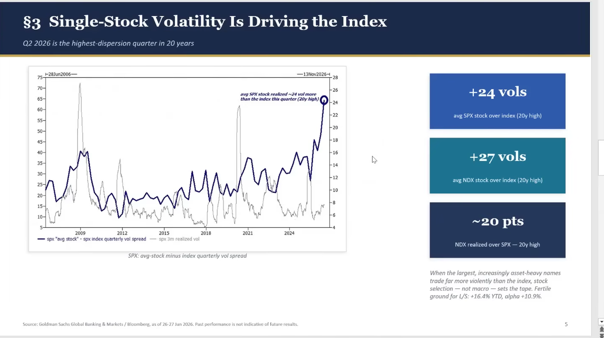
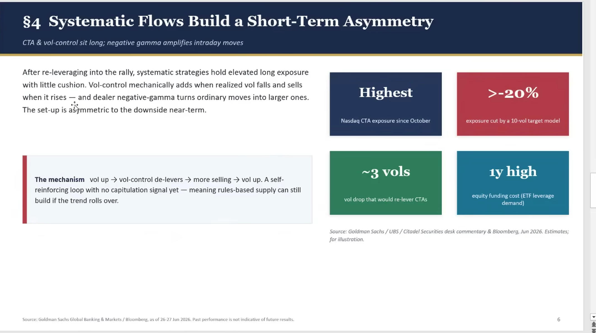
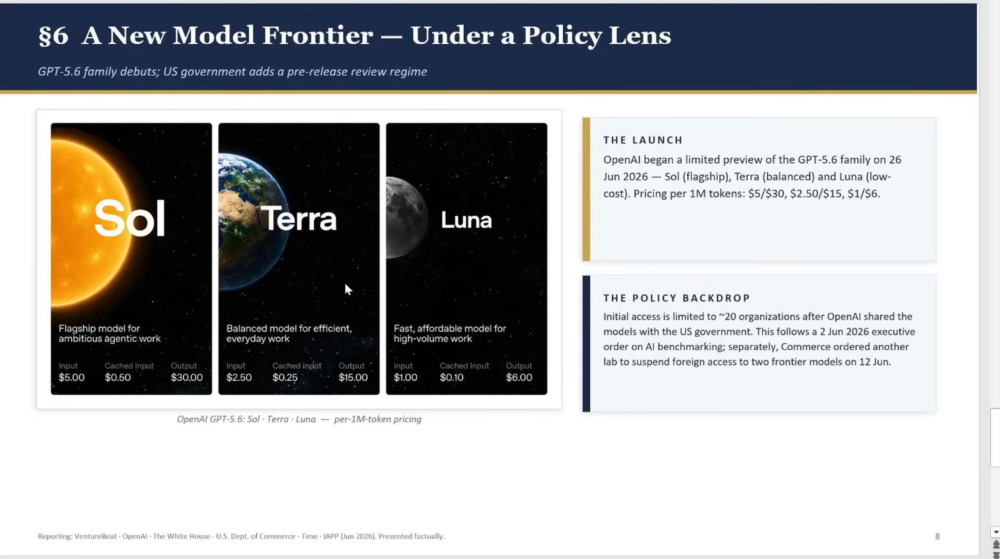

00:00–05:58
流动性、CTA 与股市反向影响宏观
市场不一定缺钱，但 CTA 的下行卖压可能不对称。随着模型和半导体规模变大，股市与模型业绩开始反过来影响宏观叙事。
这期把一个问题拆成三层：流动性如何进入市场，模型和半导体如何改变资金方向，以及 AI 需求怎样挤压原有产业链。
ocr/。字段契约 ↗Agent 主输入是 JSONL 和逐页图片；当前页面只是阅读入口。自动转录和 OCR 可能误识别专名、数字与标签。
讲者的基本判断是：流动性不会立刻变紧，但也未必再次出现四月式的大水漫灌。银行获得资本金释放后，能否继续承担风险、把钱传给市场，取决于银行体系内部的激励和风险文化，而不是资本金数字本身。
在钱不够宽的时候，资金会集中到半导体、功率器件、存储等供给受限的方向；但估值仍取决于投资者是否相信 2028—2029 年的收入。更长远的问题是，AI 模型如何通过算力、训练和工程变成可持续收入，并覆盖巨额 CAPEX。
原稿明显保留了自动转写的同音误识别。页面中的标题和摘要是按上下文整理的可读版，具体公司名、数字和政策名词请以音频及图片复核。
可直接播放本地录音；文字稿中的时间戳与此音频对应。
市场不一定缺钱，但 CTA 的下行卖压可能不对称。随着模型和半导体规模变大，股市与模型业绩开始反过来影响宏观叙事。
讲者担心市场低估开源模型的竞争力，也提醒模型可用不等于能顺畅跑通人类社会、劳动力和企业付费机制。
资本金约束放松可以创造杠杆空间，却不能自动恢复风险承担文化。银行可能把钱留在体系内、分红或回到更稳的平衡状态。
流动性不宽不等于市场没有机会。半导体、功率器件、SIC 和 MLCC 等方向可能因 AI 算力需求改写原有供需，但估值仍在 2028—2029 年收入上下注。
消费电子与 AI 争夺相同资源，影响可能扩散到更大的产业链。苹果涨价本身不是核心变量，真正的风险在于模型需求与产业供给的长期重排。
更聪明的模型并不自动带来更高利润。开源社区可能缩小封闭模型的差距，模型公司的收入能否支撑持续 CAPEX 仍需要时间验证。
图片来自目录中的本地 deck 素材。高纵向的逻辑流程图保留原始比例；逐页元数据和 OCR 见 deck.jsonl ↗。



从指数 VIX 与单股波动率的差异，看风险如何集中到具体 AI/半导体股票。

CTA、Gamma 与流动性传导共同决定下行的非对称性。

模型能力、价格、客户付费与 CAPEX 回报之间的长期关系。
| 内容类型 | 本页怎么使用 | 不要怎样理解 |
|---|---|---|
| 转录稿 | 用于还原论述顺序、关键词和时间点；摘要对明显口误做了上下文整理。 | 不是人工校订逐字稿，听感不清的位置不能靠猜测补齐。 |
| 本地 deck 图片 | 用于观察讲者的框架、图表和标签。 | 图片中的数字和来源需要回到原始文件或录音核验。 |
| 流动性 / CTA 判断 | 作为讲者对当时市场状态的解释框架。 | 不等同于实时行情、正式研究报告或确定性预测。 |
| 模型与供应链叙事 | 用于理解 AI 需求对产业链和估值的可能影响。 | 不构成投资建议，也不证明任何公司的未来收入或盈利。 |
本页是本地资料整理与阅读辅助，不构成投资建议、交易信号或 Pine Script 实现证据。原始音频、文字稿和图片均保留在当前目录。